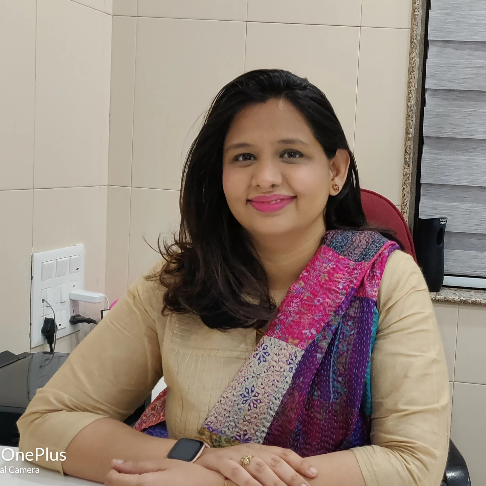

Dr.Dilip Bhamre
- MBBS, DGO, MS (OBGY),
Laparoscopic Surgeon, Founder President of MOGS
- Lecturer in Aurangabad GMC for 2 yrs
- Practicing in Malegaon since 1983
- Conducted many sessions for our rural doctors regarding what not to do in Obst practice
- Conducted Laparoscopic Sterilization Camps from 1983 onwards all over Nashik District
- Diploma in Laparoscopic surgery from Kiel Germany and Cochin
- 1st Gynaec Video Endoscopist in Nashik & Dhulia district
- Founder President of MOGS

Dr.Mugdha Bhamre
- MBBS, MS (OBGY),
Fertility Specialist
- Consultant in Currae Gynaec | IVF | Birthing Hospital Thane
- 6+ years experience in Reproductive Medicine
- Masters Degree in Reproductive Medicine from NUHS, London
- Fellowship in ART from Singapore and Thailand
- Fellowship in Fertility Enhancing Laproscopy surgery
- Training in Doppler Sonography
- Training in Clinical Embryology